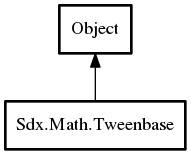

Tweenbase
Object Hierarchy:

Description:
public class Tweenbase :
Object
BaseTween is the base class of Tween and Timeline. It defines the iteration engine used to play animations for any number of times, and
in any direction, at any speed. <p/>
It is responsible for calling the different callbacks at the right moments, and for making sure that every callbacks are triggered, even
if the update engine gets a big delta time at once.
based on code by Aurelien Ribon
See also:
Tween, Timeline
Content:
Enums:
Delegates:
- public delegate Tweenbase TweenReset ()
- public delegate Tweenbase TweenBuild ()
Builds and validates the object. Only needed if you want to finalize a
tween or timeline without starting it, since a call to ".start()" also calls this method.
- public delegate void TweenFree ()
Stops and resets the tween or timeline, and sends it to its pool, for
later reuse. Note that if you use a {link TweenManager}, this method is automatically called once the animation is finished.
- public delegate Tweenbase TweenStart (TweenManager? manager = null)
- public delegate void TweenForceStartValues ()
- public delegate void TweenForceEndValues ()
- public delegate bool TweenContainsTarget (void* target, int tweenType = -1)
- public delegate void TweenInitializeOverride ()
- public delegate void TweenUpdateOverride (int step, int lastStep, bool isIterationStep, float delta)
Creation methods:
Methods:
- public Tweenbase Delay (float delay)
Adds a delay to the tween or timeline.
- public void Kill ()
Kills the tween or timeline. If you are using a TweenManager, this
object will be removed automatically.
- public void Pause ()
Pauses the tween or timeline. Further update calls won't have any
effect.
- public void Resume ()
Resumes the tween or timeline. Has no effect is it was no already
paused.
- public Tweenbase Repeat (int count, float delay = 0)
Repeats the tween or timeline for a given number of times.
- public Tweenbase RepeatYoyo (int count, float delay = 0)
Repeats the tween or timeline for a given number of times. Every two
iterations, it will be played backwards.
- public Tweenbase SetCallback (TweenCallbackOnEvent callback)
Sets the callback. By default, it will be fired at the completion of
the tween or timeline (event COMPLETE). If you want to change this behavior and add more triggers, use the {link setCallbackTriggers()
} method.
- public Tweenbase SetCallbackTriggers (int flags)
Changes the triggers of the callback. The available triggers, listed
as members of the {link TweenCallback} interface, are:
- public Tweenbase SetUserData (void* data)
Attaches an object to this tween or timeline. It can be useful in
order to retrieve some data from a TweenCallback.
- public float GetDelay ()
Gets the delay of the tween or timeline. Nothing will happen before
this delay.
- public float GetDuration ()
Gets the duration of a single iteration.
- public int GetRepeatCount ()
Gets the number of iterations that will be played.
- public float GetRepeatDelay ()
Gets the delay occuring between two iterations.
- public float GetFullDuration ()
Returns the complete duration, including initial delay and
repetitions. The formula is as follows: fullDuration = delay + duration + (repeatDelay + duration) * repeatCnt
- public void* GetUserData ()
Gets the attached data, or null if none.
- public int GetStep ()
Gets the id of the current step. Values are as follows:
- public float GetCurrentTime ()
Gets the local time.
- public bool IsStarted ()
Returns true if the tween or timeline has been started.
- public bool IsInitialized ()
Returns true if the tween or timeline has been initialized. Starting
values for tweens are stored at initialization time. This initialization takes place right after the initial delay, if any.
- public bool IsFinished ()
Returns true if the tween is finished (i.e. if the tween has reached
its end or has been killed). If you don't use a TweenManager, you may want to call {link free()} to reuse the object later.
- public bool IsYoyo ()
Returns true if the iterations are played as yoyo. Yoyo means that
every two iterations, the animation will be played backwards.
- public bool IsPaused ()
Returns true if the tween or timeline is currently paused.
- protected void ForceToStart ()
- protected void ForceToEnd (float time)
- protected void CallCallback (int type)
- protected bool IsReverse (int step)
- protected bool IsValid (int step)
- public void KillTarget (void* target, int tweenType = -1)
- public void Update (float delta)
Updates the tween or timeline state. You may want to use a
TweenManager to update objects for you.
Fields: